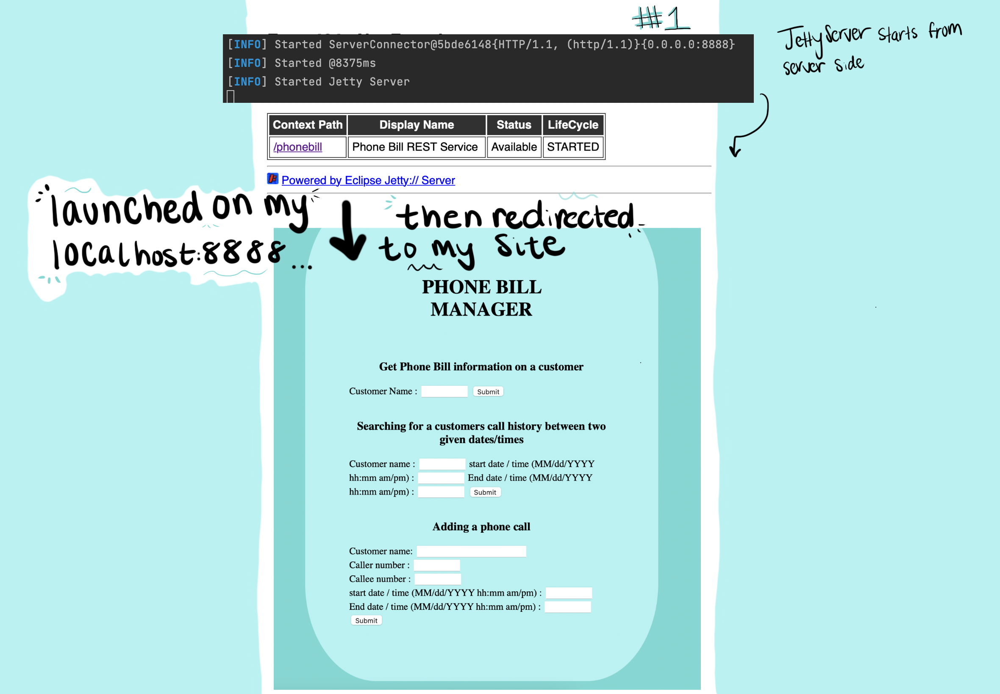
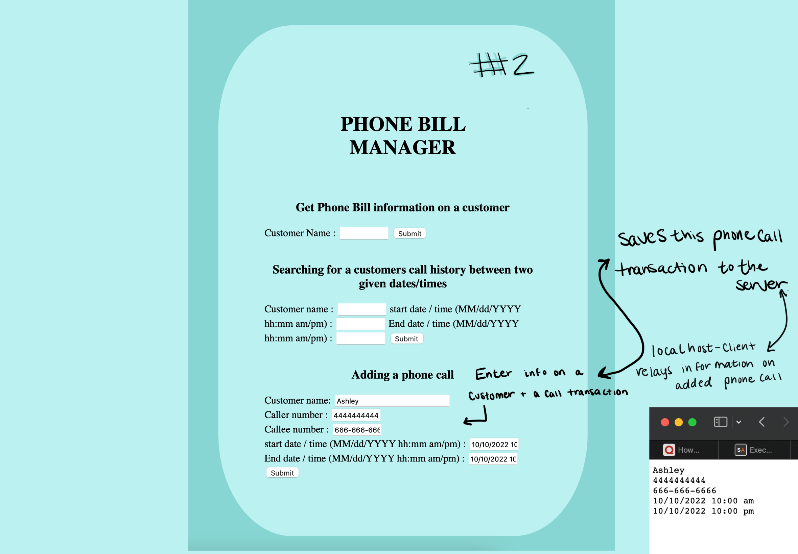

PhoneBillManager
2022
Phone Bill Manager -
Client / Server
Java Language - Object Oriented design - Test driven development - intelliJ - android studio - REST API - maven - javadocs - jacoco
Through the course of an advanced java programming course, I created both a client-server web interface and an android
application to simulate a phone bill managing account.
Android App:
This program receives information from the client on a customer and a phone call, saves
that information to the server. The client can request and retrieve information from the server about a customers
phone bill history, and has the option to filter their search between two times for a customers phone bill history

Site Launches on local host 8888

Client enters a phone call transaction to save onto the server
 Client can request a particular customers phone bill information, displaying a complete list
of calls under requested customers name
Client can request a particular customers phone bill information, displaying a complete list
of calls under requested customers name
 Client can filter the search results, only displaying the calls between two times for the
requested customer
Client can filter the search results, only displaying the calls between two times for the
requested customer